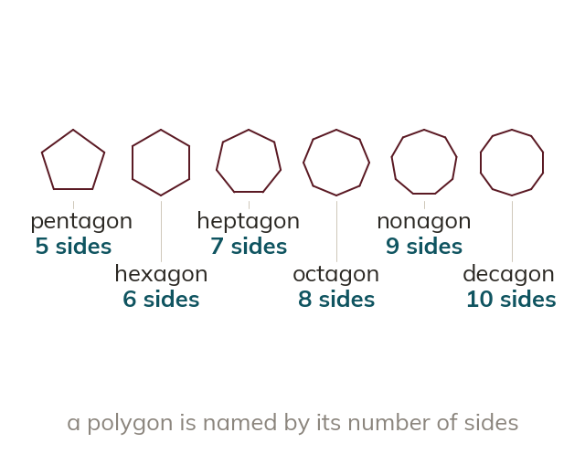

Naming polygons
A polygon is a closed shape with straight sides. Polygons are named by their number of sides. Pentagon hexagon heptagon octagon nonagon decagon
A polygon is a closed shape made only of straight sides. Polygons are named by how many sides they have: pentagon hexagon heptagon octagon nonagon decagon